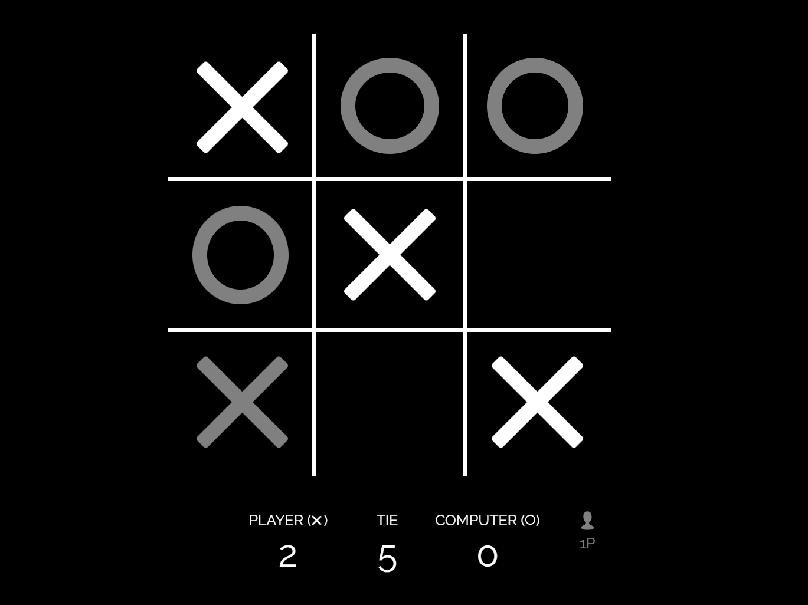
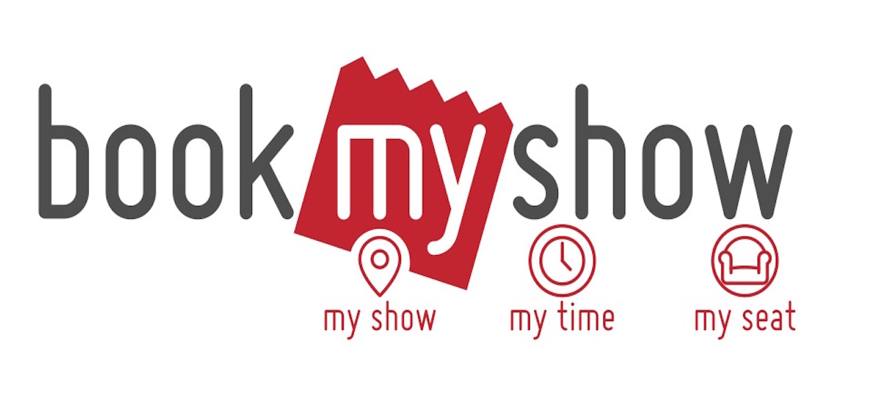

Various projects were made during the scaler academy online course, mainly backend MVC applications on JAVA.
MVC

Model–view–controller is a software architectural pattern commonly used for developing user interfaces that divide the related program logic into three interconnected elements. This is done to separate internal representations of information from the ways information is presented to and accepted from the user. Traditionally used for desktop graphical user interfaces (GUIs), this pattern became popular for designing web applications. Popular programming languages have MVC frameworks that facilitate the implementation of the pattern.
Tic-Tac-Teo
Tic-Tac-Teo game that can be played by 2 players or 1 player can play against computer. MVC application designed using design patters like controllers, factory methods, builder, models ,strategies and services.
Github link - Tic-Tac-Teo Technologies used in this project.
- VS-Code for source code editor.
- Java for designing MVC applications.
Parking Lot
A parking lot management MVC application designed using popular design patters like controllers, builder, DTOs, models, strategies, repositories and services.
Github link - Parking lot
Technologies used in this project.
- VS-Code for source code editor.
- Java for designing MVC applications.
Book My Show
A clone of Book My Show MVC application designed using popular design patters like controllers, builder, DTOs, models, repositories, strategies and services.
Github link - BookMyShow Technologies used in this project.
- VS-Code for source code editor.
- Java for designing MVC applications.
Splitwise

Technologies used in this project.
- VS-Code for source code editor.
- Java for designing MVC applications.